The Imperium of Man
The Imperium of Man is a massive authoritarian empire that spans the galaxy, united under the worship of the God-Emperor of Mankind. It represents humanity’s desperate attempt to survive against countless hostile threats. The Imperium is a rigid and often brutal regime, with a heavy focus on faith, loyalty, and obedience to the Emperor. Its military includes the elite Space Marines, the vast ranks of the Astra Militarum (Imperial Guard), and the fanatical Sisters of Battle. Despite being humanity's greatest protector, the Imperium is also plagued by corruption, bureaucracy, and infighting, making it a harsh, unrelenting force both to its enemies and its own people.
Chaos
Chaos is the antithesis of the Imperium, worshiping dark, malevolent gods known as the Ruinous Powers. Each Chaos god represents a different aspect of corruption and vice—Khorne embodies bloodlust, Nurgle disease and decay, Tzeentch magic and change, and Slaanesh excess and pleasure. Followers of Chaos, including the once-loyal Chaos Space Marines, have succumbed to the gods' temptations and now wage war against the Imperium. They aim to spread chaos, madness, and destruction across the galaxy. Chaos represents a threat not only to humanity but to the entire universe, as it seeks to bring all of existence under its dark influence.
The Orks
The Orks are a brutal, war-loving species known for their crude technology, chaotic nature, and sheer numbers. They live for battle and seek conflict wherever they go, viewing it as the ultimate form of entertainment. Orks thrive in disorder and believe that sheer force can solve any problem. Their technology, while ramshackle and unpredictable, works through their collective belief that it should function. Orks are notorious for their resilience, ability to reproduce rapidly, and destructive potential. They are an ever-present menace in the galaxy, attacking both the Imperium and other factions with equal enthusiasm, driven purely by their lust for endless war.
Other Factions
While the Imperium, Chaos, and Orks are some of the main factions in Warhammer 40K, they are far from the only ones. The galaxy also hosts enigmatic alien races like the Eldar, a once great species with powerful psychic abilities; the Necrons, ancient robotic warriors awakening from millennia of slumber; and the Tyranids, a terrifying hive mind species that consumes all biomass in its path. There are also the T’au Empire, a technologically advanced race that seeks to bring other species under its “Greater Good.” Each faction brings unique lore, playstyles, and aesthetics, adding incredible depth and variety to the Warhammer 40K universe.